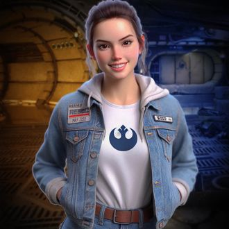

-
Luke Pathwalker
Descrição
Luke é um jovem muito talentoso de grande poder lógico, Suas mitocôndrias são surpreendentemente abundante e a força o acompanha em qualquer lugar desse vasto universo de bits e bytes. Sua fidelidade ao Mestre Coda e ao código-fonte faz dele o maior discípulo da galáxia. Mas seus poderes vão mais além, com seu profundo conhecimeto em fullstack ele desenvolve sistemas flexíveis e seguros, garantindo a estabilidade e a harmonia do universo digital.
-
Prisciléia
Descrição
Uma exímia Cientísta de Progração, seu maior poder consiste em gerenciar o desenvolvimento dos sistemas globais. Ela conhece como ninguém a imensidão da rede, navegando sempre por zonas seguras e permitindo que todos da equipe consigam chegar a portos seguros, com isso ela garante que os dados que foram transmitidos nessa galáxia, ou em qualquer outra, consiga chegar ao seu destino, com integridade, discrição e segurança.
-
Ram Core
Descrição
Navegador experiente, conhece todos os caminhos do desenvolvimento de sistemas, dos mais seguros aos mais complexos e extensos. Está sempre acompanhando Priscileia não importa onde tenham que ir, seu instinto sempre o direciona ao questionamento correto e sua maior marca é, indiscutivelmente, a velocidade com que desenvolve os códigos.
-
Chewdata
Descrição
Niguém ouse viajar no universo do desenvolvimento sem o auxílio de Chewdata, ou Chewe como Ram costuma chamar, e não se iluda com o rosto peludo, nessa mente habita o mais habilidoso estruturador de dados da galáxia. Nenhum bit passa desapercebido aos seus olhos, nenhum byte se extravia sob sua supervisão, além de garantir o acesso mais rápido e mais seguro a qualquer nível de informação. Tendo uma honra de gratidão ao Mestre Coda ele acompanha sua equipe em todas as entranhas do código, afinal, nasceu para os dados e ama o que SQL-faz.
-
Code Mapper
Descrição
Sua fama atravessa os milhões de sistemas que existem nessa galáxia, não à toa Code Mapper conseguiu esse nome. Sua habilidade em mapear qualquer função extraordinária o tornou um perseguidor implacável, capaz de achar qualquer código fora da sua diretriz e das ordens de seu grande Mestre, o "Imperador". Code Mapper persegue a equipe Star Web Dev incansavelmente, pois seu objetivo é neutralizar a força dos códigos perfeitos, para prevalecer apenas a sua estrutura pesada e densa do lado escuro da Web, para isso ele conta com um exército de devs altamente fiéis ao seu sistema e ao "Imperador".
-
C3-io
Descrição
C3-io representa um marco na comunidade Dev, ele á a própria "Large Language Machine", autodesenvolvida e sustentável, ora se apresentando na forma humana, ora se apresentando na forma de um andróide. C3-io é uma peça fundamental na equipe Star Web Dev, já que conhece todos os atalhos, todas as flags, todos os dumps, ele sabe saltar como ninguém no multiverso binário. Além disso, detém um conhecimento profundo de todas as linguagens da galáxia e seu código-fonte nunca fica desatualizado.
-
Array
Descrição
A mais jovem desenvolvedora da equipe Star Web Dev, Array não hesita em mostrar seus poderes que vão além da imaginação, ela domina todas as variáveis e com isso o fluxo de todo e qualquer código escrito na galáxia. Sua beleza reflete a organização de seus scripts. Assim como Luke, ela carrega em si uma imensa quatidade de mitocôndrias, aumentando exponencialmente suas funções matemáticas operações lógicas. E já que sua força está nas variáveis, seu poder está intimamente ligado à DataBase, sendo assim, quando junta-se ao Chewe, ambos percorrem as entranhas dos Mainframes de qualquer sistema do unverso binário.
-
Mestre Coda
Descrição
Mestre Coda é o mais antigo desenvolvedor que existe na galáxia e, também, o mais sábio. Sua experiência percorre os mais variados níveis de desenvolvimento que um Dev jamais poderia imaginar em possuir. Ele lidera um grupo dedicado e talentoso - Star Web Dev, sem falar nos poderes que cada um tem. Mestre Coda desenvolveu uma capacidade de premonição e de telecinese de um tal tamanho de poder que seus sistemas são codados na velocidade do seu pensamento, mantendo uma relação muito estreita com o fluxo de energia vital desses e de todos os demais sistemas no universo, mesmo aqueles com código denso, do lado obscuro da Web, isso é o que mantém a força viva dentro do universo binário. O equilíbrio da força é a chave para a evolução dos mundos - esse é o seu legado.